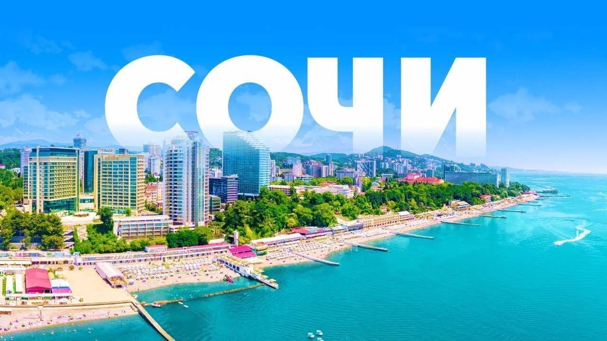
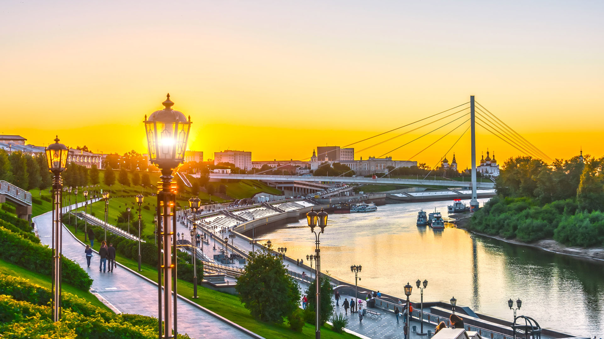

Приветствую вас на моём образовательном маршруте! Дорогие друзья, название маршрута является “Гонка за кубком Содружества”. Календарь Кубка Содружества по биатлону сезона 2022/2023 включает в себя шесть этапов — два летних и четыре зимних. Первый этап проходит в Сочи 25-28 августа 2022 года. Завершится сезон финальным этапом 9-12 марта 2023 года в Тюмени.
Кубок Содружества проводится впервые и в какой-то мере призван заменить российским и белорусским биатлонистам международные старты, от которых решением IBU сборные России и Беларуси по биатлону были в сезоне 2022/2023 отстранены.
Псс..
Не забудь поделиться информацией с другом!
Города принявшие участие в проведении соревнований
Этап 1 – Сочи (RUS) (25-28 августа)

Данный этап, как вступление в гонку, проводится 25-28 числах августа и включает в себя такие дисциплины, как спринт, гонка преследования (пасьют) и масс-старт, соответственно мужские и женские. В спринте мужчины бегут 10 км, а женщины - 7,5 км. Гонка преследования подразумевает 12,5 мужских км и 10 км женских. Масс-старт: мужчины 15 км, женщины 12,5 км.
2.
2 этап, после ознакомительного, был уже немного насыщеннее гонкой. Проводился она 15-18 числах сентября. Тут дисциплины остаются теми же (Спринт, Гонка преследования, Масс-старт). Трансляции соревнований были на телеканалах Матч ТВ, Матч! и Арена. Время их показа на телеканалах московское.
Следующий, уже третий этап, будет проходить в зимнее время, сменив лыжероллеры на лыжи. Начало будет положено 23-го числа декабря, 24-го пройдут завершающие этап гонки. Здесь же включены Спринтерские гонки и Масс-Старт (и мужские, и женские).
Задания: 1. Узнать у 4-ых спортсменов (двоих одной страны, двоих из другой страны) физические качества и качества работы на огневом рубеже (и из положения лёжа, и из положения стоя). 2. Создать интеллект-карту, показав сравнение каждого из 4-ёх спортсменов.
*Тык*
Этап 4 – Раубичи (BLR) (19-22 января)
Последующий этап пройдёт в Раубичи, Белоруссия. Дисциплины будут те же, что и на первых двух этапах, а именно спринтерские гонки, гонки преследования и масс-старты, расстояния дистанций точно такие же (Спринт: Мужчины 10 км, Женщины 7,5 км; Гонка преследования: Мужчины 12,5 км, Женщины 10 км; Масс-старт: Мужчины 15 км, Женщины 12,5 км).
Задания: 1. Рассмотреть биатлонистов (будь то женщина, будь то мужчина) и выбрать одного, которого будете разбирать (силовые качества, оценки вступлений, развитие скорости, средней скоростью). 2. Создайте видеоролик, посвящённый этому спортсмену, указывая качества, что выясните про биатлониста.
*Тык*
Этап 5 – Раубичи (BLR) (26-29 января)
Очередной этап будет проводиться вновь в Белоруссии, в городе Раубичи. Дисциплины подобны тем, что пройдут на 4-ом этапе, т.е. спринтерские гонки, гонки преследования и масс-старты. Расстояния дистанций те же (Спринт: Мужчины 10 км, Женщины 7,5 км; Гонка преследования: Мужчины 12,5 км, Женщины 10 км; Масс-старт: Мужчины 15 км, Женщины 12,5 км).
Задания: 1. Рассмотрев физические данные спортсменов одной страны, найдите скоростные показатели. 2. Составьте логотип на основе выявленных данных.
*Тык*
Этап 6 – Тюмень (RUS) (9-12 марта)

Финальный этап оставлен на март месяц, в Тюмень. Этап включает себя две спринтерские гонки, после которых пройдут ещё две гонки, что зовутся гонками пресследования. А также там пройдут смешанные эстафеты, одной из которых является одиночной смешанной.
Задания: 1. Проссмотреть все гонки, оценить выступление биатлонистов и создать постер по одному из видов гонок, включённых в данный этап.
*Тык* 2. Сделать ментальную карту, включающую в себя центром этап и его название.
*Тык*